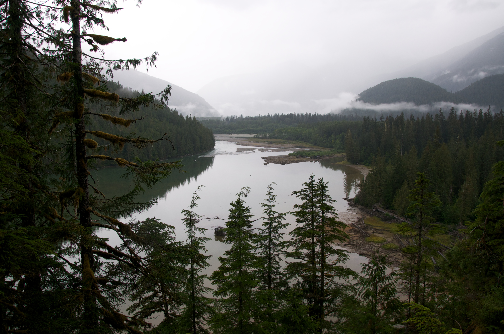

.ui-browser-chrome__window img ~ p { color: #ff9900; font-weight: 300; }

Rainforests are forests characterized by high and continuous rainfall, with annual rainfall in the case of tropical rainforests between 2.5 and 4.5 metres (98 and 177 in),[1] and definitions varying by region for temperate rainforests. The monsoon trough, alternatively known as the intertropical convergence zone, plays a significant role in creating the climatic conditions necessary for the Earth's tropical rainforests: which are distinct from monsoonal areas of seasonal tropical forest.
source: https://en.wikipedia.org/wiki/Rainforest